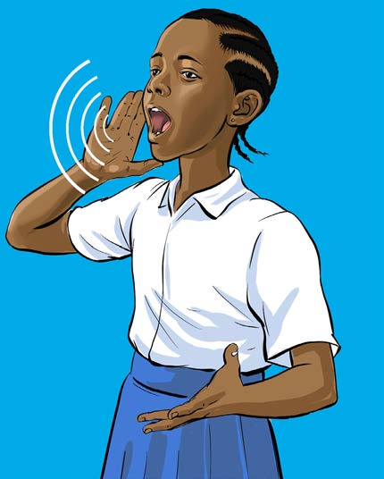

Figure.2: An actor practising speaking at a distance
Activity 7
Practice voice projection using the following steps:
(a) Stand at a place where there is a distance between you and the place you aim to convey the message;
(b) Speak in a low voice; then;
(c) Increase the volume slowly aiming to convey the message to the most distant area without making it too loud.
Exercise 3
1. Why is it important to have a strong and clear voice when performing?
2. Explain how to use voice to show emotions if you are playing the role of an angry person in a play.